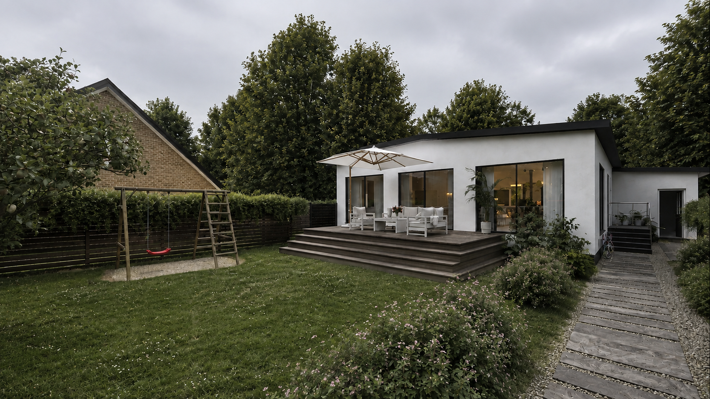

Villa Red Sun — Climate Instrument
55.516105°N 12.208375°E
Solar Position — Solar Noon
—
Calculated — derived from site coordinates
Air Temperature
—
Solrød station · 2006–2015
Precipitation
—
Solrød station · 2006–2015
Prevailing Wind
W / WSW
Regional — DMI · speed not established
Solar — Noon
—
Calculated
Temperature
—
Station mean
Precipitation
—
Station · month
Wind
—
Regional — no speed data
ISOLATED R&D — Phase 3.6. Photograph: A-02-villa-red-sun-exterior-view-02_result.png, copied byte-identical from the authoritative asset library, shown with zero filtering/relighting/color adjustment. Solar geometry calculated live from exact site coordinates using a standard NOAA/Meeus solar-position algorithm (validated against the authoritative report's reference points — see README). Temperature, precipitation and sunshine: real monthly values from Complete-Climate-Site-Analysis-A-villa-red-sun.txt. Wind: direction only, per DMI regional data — no monthly speed exists and none is shown. Humidity: omitted (not established for this site).